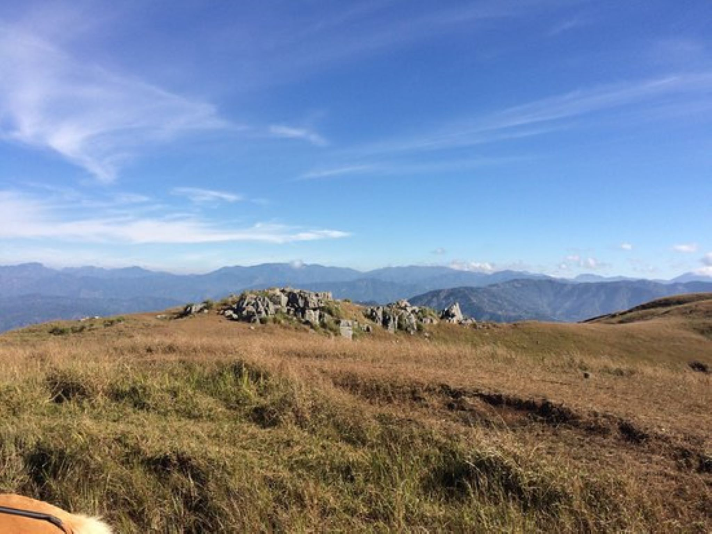
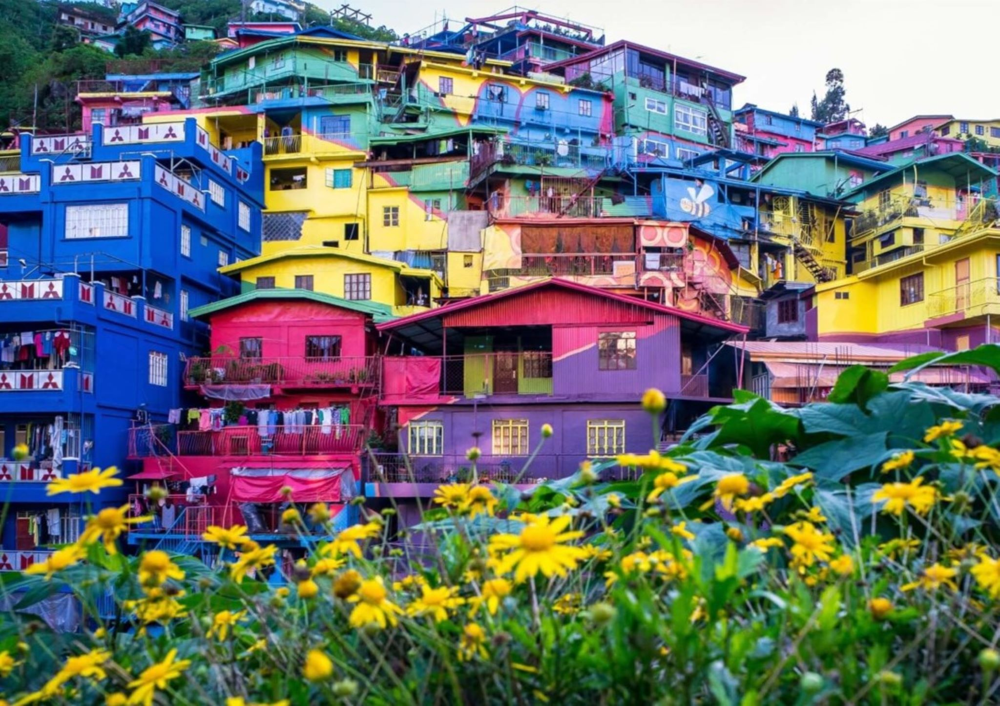
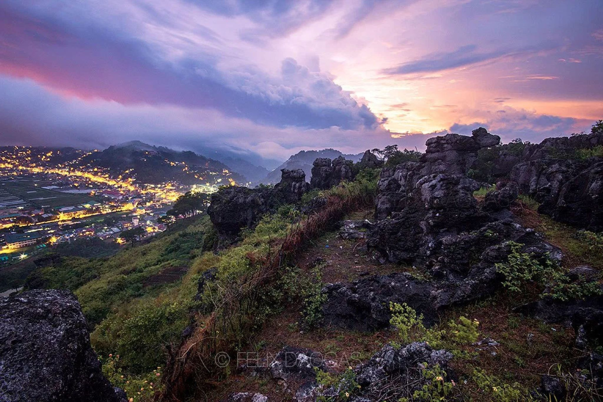
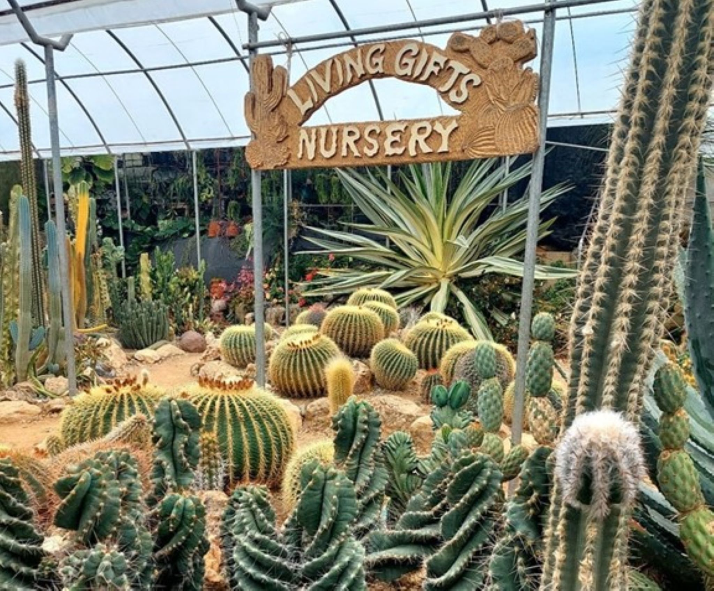

Discover the cultural allure of Bell Church in La Trinidad, Benguet, where ornate architecture and vibrant colors converge in a tranquil setting. This picturesque tourist spot invites visitors to explore traditional Chinese and Filipino influences, offering a serene escape with beautifully landscaped gardens and iconic bell towers.
Finding A Beautiful Place To Visit?
Tourist Spots

Bell Church

Strawberry Farm
Mt. Yangbew
The Valley Of Colors "Stobosa"

Sunflower Farm
Mt. Kalugong

Rocky Mountain Resort
Living Gifts Nursery
Bell Church
Strawberry Farm
Immerse yourself in the sweet charm of La Trinidad's Strawberry Farm, where endless rows of vibrant red berries stretch across the picturesque landscape. This popular tourist spot invites visitors to pluck their own strawberries, providing a delightful hands-on experience amidst the scenic beauty of Benguet.
Mt. Yangbew
Embark on an exhilarating journey to Mt. Yangbew in La Trinidad, Benguet, where panoramic views unfold against the backdrop of lush greenery. This popular tourist spot offers both adventure seekers and nature enthusiasts a scenic trek to a breathtaking summit, providing a rewarding experience with sweeping vistas of Benguet's stunning landscapes.
The Valley Of Colors "Stobosa"
Nestled in the heart of La Trinidad, Benguet, The Valley of Colors, or "Stobosa," is a captivating tapestry of vibrant houses that paint the hills with a kaleidoscope of hues. This picturesque tourist spot is a testament to community artistry, inviting visitors to stroll through the lively streets and experience the joyous burst of colors against the scenic mountain landscape.
Sunflower Farm
Bask in the golden beauty of La Trinidad's Sunflower Farm, where vast fields of radiant sunflowers sway under the gentle Benguet breeze. This enchanting tourist spot offers a serene escape, inviting visitors to immerse themselves in the sea of cheerful blooms against the backdrop of the picturesque mountains.
Mt. Kalugong
Embark on a scenic adventure to Mt. Kalugong in La Trinidad, Benguet, where breathtaking viewpoints await atop towering rock formations. This captivating tourist spot offers not only panoramic vistas of the surrounding landscapes but also a unique experience as visitors can explore the distinctive rock clusters, creating lasting memories in the heart of Benguet's natural beauty.
Rocky Mountain Resort
Perched on the heights of La Trinidad, the Rocky Mountain Resort welcomes visitors to a tranquil retreat with panoramic views of Benguet's majestic landscapes. This idyllic tourist spot offers a perfect blend of relaxation and adventure, featuring cozy accommodations and outdoor activities amid the serene beauty of the mountains.
Living Gifts Nursery
Discover the enchanting Living Gifts Nursery in La Trinidad, Benguet, where the air is filled with the fragrant symphony of blooming flowers and lush greenery. This unique tourist spot invites nature enthusiasts to wander through vibrant gardens, offering a serene escape into the heart of Benguet's botanical wonders.